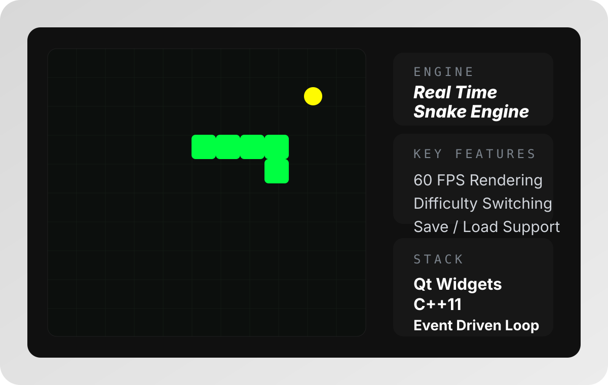
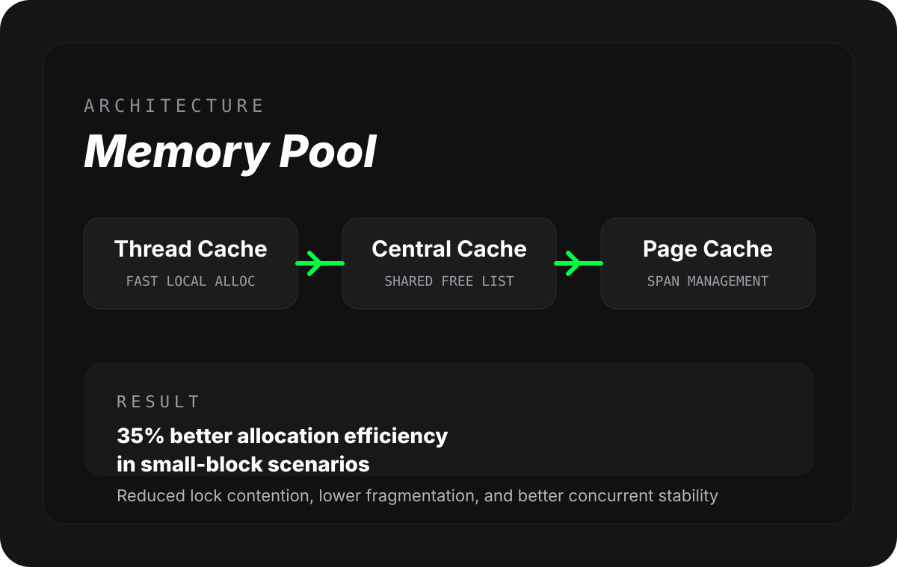
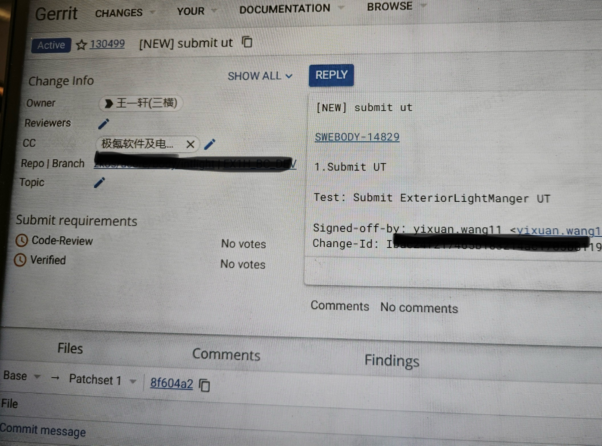

01 / BIOGRAPHY
用技术构建桥梁，用产品思维推动落地。
我希望自己不只是完成功能的人，而是能理解需求目标、判断实现路径、推动方案交付的人。对我来说，好的产品表达和稳定的技术实现，本来就应该放在一起思考。
在个人项目和实习阶段，我逐渐把关注点从单一实现扩展到了流程设计、测试验证、协作推进和用户体验。这也是我现在更明确把技术产品作为求职主方向的原因。
TECH PRODUCT/REQUIREMENT ANALYSIS/USER FLOW/C PLUS PLUS/QT DEVELOPMENT/TEST CLOSED LOOP/TEAM DELIVERY/TECH PRODUCT/REQUIREMENT ANALYSIS/USER FLOW/C PLUS PLUS/QT DEVELOPMENT/TEST CLOSED LOOP/TEAM DELIVERY
SKILLS.
CORE STACK ONLINE
PROGRAMMING
熟练掌握 C++ / Qt，具备高性能桌面应用开发经验，也能把复杂逻辑拆回到数据结构和底层实现。
熟悉 MySQL 与 SQL 基础操作，能够完成界面、数据和交互验证之间的完整联动。
SYSTEMS
熟悉 Linux 环境开发，能够使用 Git、CMake 与 Shell 脚本完成基础工程协作和开发流程搭建。
掌握 TCP/IP 协议栈、Socket 通信、线程与文件 I/O 等核心概念，具备系统层面的理解能力。
SPECIALIZED
具备 测试闭环 意识，能够从需求拆解、接口验证到回归测试去判断功能是否真正可交付。
在个人项目和实习中持续强化 产品协作 视角，关注流程、质量与落地体验之间的关系。
PRODUCT / 产品理解
理解目标
我希望把技术和产品放在同一条链路里思考，不只是实现功能，也会先判断目标、用户和落地价值。
- 目标理解：先判断这件事为什么做、解决谁的问题、预期效果是什么。
- 用户视角：关注使用路径是否清晰，功能是否真的解决真实问题。
- 方案判断：把目标、流程和实现方式放在一起考虑。
METHOD / 工作方式
流程推进
我习惯先把目标和使用场景理清楚，再画流程图，然后进入代码开发。遇到问题时也会及时沟通，避免把小问题拖成更大的风险。
- 先理解需求：明确目标、边界和使用场景。
- 再拆流程：把关键步骤和异常情况梳理清楚。
- 及时沟通：发现风险后尽快同步，不让问题堆积。
QUALITY / 测试意识
验证质量
个人项目里遇到的问题越多，我越明确严格的逻辑和测试闭环是必不可少的。功能实现之后，我会更关注是否稳定、是否可验证、是否真的能交付。
- 逻辑校验：先确认边界条件和状态流转是否自洽。
- 测试验证：关注接口、数据、回归和异常场景是否可验证。
- 交付意识：不仅完成功能，也关注稳定性和可复现性。
DELIVERY / 交付视角
推动落地
我会从开发、测试、评审和演示这些真实环节去看方案，而不是只停留在“功能已经写完”的阶段。
- 联调协作：考虑和产品、设计、测试之间的信息传递是否顺畅。
- 风险意识：提前关注周期、成本和实现难点，减少返工。
- 稳定交付：让方案最终能够被开发、测试、演示和稳定交付。
PRODUCT STRATEGY/QUALITY ASSURANCE/INTERACTION FLOW/LINUX SYSTEM/MYSQL VALIDATION/INTERNSHIP PRACTICE/CROSS TEAM COMMUNICATION/PRODUCT STRATEGY/QUALITY ASSURANCE/INTERACTION FLOW/LINUX SYSTEM/MYSQL VALIDATION/INTERNSHIP PRACTICE/CROSS TEAM COMMUNICATION
Works.
01 / QT ENGINE
REAL TIME
SNAKE ENGINE
一个基于 Qt 的高性能桌面游戏引擎，围绕经典玩法实现动态难度调节、状态持久化与稳定渲染流程，重点体现桌面程序架构设计与交互实现能力。
ROLE独立完成桌面交互与状态逻辑实现
STACKQt Widgets / C++11 / 事件驱动
RESULT实现 60FPS 流畅动画，支持难度切换与存档读档

02 / SYSTEM MEMORY
MEMORY
POOL
面向多线程高并发场景设计并实现的内存池系统，采用三级缓存架构优化内存分配效率，重点解决传统 malloc/free 在高并发下的锁竞争与碎片问题。
ROLE完成缓存层级设计与核心分配流程实现
STACKC++ / 多线程同步 / 哈希桶 / 页缓存
RESULT小块内存场景分配效率提升约 35%，显著降低碎片率

INTERNSHIP / 实习经历
让需求落地
在真实业务里，把需求、开发、测试和协作连起来。

电子软件实习生
吉利汽车研究院（宁波）有限公司
在实习阶段，我参与车内氛围灯动态流效方案的功能开发与产品落地，把提升用户体验和品牌认知度的需求转化为可实现、可测试、可交付的方案。
SCENE车内氛围灯动态流效与发布会演示支持
COLLAB协同产品、设计、硬件推进方案评审与落地
RESULT形成可开发、可测试、可交付的功能闭环
- 参与车内氛围灯动态流效方案的功能开发，运用 C++ 实现核心逻辑，并支持车型发布会中的产品演示需求。
- 独立编写 Python 自动化测试脚本，参与 C++ 单元测试与每日回归测试体系建设，提升测试效率与交付质量。
- 与产品、设计、硬件团队协作，跟踪参与产品方案的技术评审，从开发周期、风险与成本角度推动方案落地。
PRACTICE / 成长轨迹
成长轨迹
- 2023
从 C / C++、数据结构、Linux 和 Qt 开始打基础，逐步建立起底层实现和桌面开发能力。
- 2024
在个人项目和测试实践中补足方法意识，开始更重视流程拆解、验证逻辑和质量闭环。
- 2025.08
进入吉利汽车研究院实习后，开始在真实业务里理解需求、开发、测试和交付之间的关系。
- 2026
当前求职主方向明确为技术产品，也继续保留工程实现和测试能力的复合优势。
TARGET / 求职方向
求职方向
目前求职以技术产品为优先，希望继续发挥工程实现、测试意识和沟通推进上的复合优势。
- 优先方向：技术产品相关岗位。
- 能力支撑：兼顾工程实现、测试闭环与跨团队协作。
- 期待场景：能够参与需求判断、方案推进和产品落地的团队。